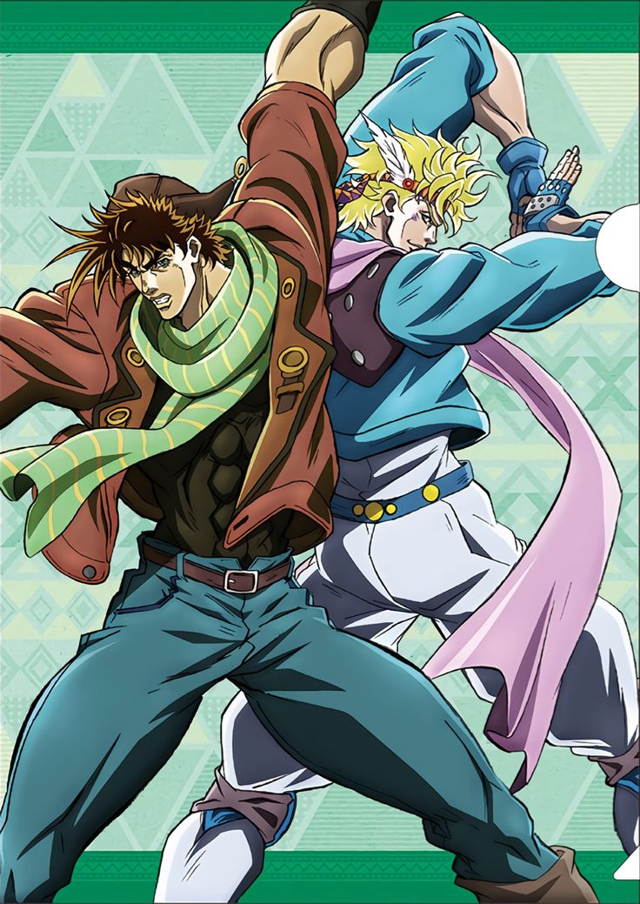

karakter
The Best Jobros

Kakyoin&Jotaro

Joseph&Caesar

Jojo's Bizzare Adventure menceritakan tentang seorang laki-laki bernama Jonathan alias Jojo yang merupakan
putra tunggal keluarga bangsawan Inggris, Joestar. Joe bercita-cita menjadi pria terhormat dan menjalani kehidupan yang terkekang.
Duo terbaik sepanjang masa
Walaupun awalnya sempat menjadi musuh dan saling lawan melawan untuk melindungi nyawanya masing masing,namun mereka pada akhirnya berteman hingga ahkir hayat nya
Joseph adalah anak berandalan dan nakal,sedangkan Caesar adalah anak dari bangsawan dan caesar pun mengejek Joshep karena bukan tandingan nya namun siapa sangka di pertandingan tersebut seri dan mereka memiliki tujuan yang sama untuk membunuh vampir
Gyro yang sedang mendaftarkan diri untuk ikut sebuah perlombaan di Amerika Serikat untuk memenangkan hadiah yang begitu besar namun dengan 1 syarat,yaitu saling membunuh.karena gyro anak yang baik ia melihat jhonny yang tidak bisa jalan namun merangkak,gyro pun siap membantu jhonny hingga finish
The Best Jobros
stand ini memiliki kekuatan yang sangat mengerikan dan mematikan
Stand ini dapat menghentikan waktu sesuka hatinya dan memiliki kecepatan yang begitu luar biasa
Stand ini dapat membuat loop terhadap lawanya dan kebal dari stop time,stand ini dapat menyembuhkan penggunanya
Stand ini dapat mempercepat waktu di dunia dan memiliki kecepatan yang begitu cepat bahkan melebihi kecepatan cahaya